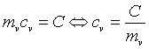

På posthuset kan man købe en flamingo-indpakning til forsendelse af vinflasker. Denne beholder er yderst velegnet som »kalorimeter«. Den modtager næsten igen varme og den er meget varmeisolerende. Desuden benyttes et energimeter, et termometer, en dyppekoger med en effekt på ca. 300 watt. ENG110 fra Elcanic kan både måle energi og temperatur. Det er derfor velegnet til forsøget.
Flamingo-indpakningen vejes, fyldes halvt med vand og vejes igen, så massen af vandet kan beregnes.
Man kan med fordel have anbragt en dunk med vand i køleskabet, så man kan starte forsøget med vand under stuetemperatur.
Dyppekogeren tilsluttes energimetret og anbringes i vandet. Termometret anbringes også i vandet.
Mål sammenhørende værdier af energiforbrug og temperatur.
I Datalyse vælges retur for hver måling. Foretag en måling inden dyppekogeren tilsluttes. Tilslut dyppekogeren og rør rundt i vandet. Hver gang temperaturen er steget ca. 5°C demonteres dyppekogeren og der måles efter grundig omrøring. Afbryd målingerne, når temperaturen er ca. 50 °C.
Afbild i programmet temperaturen som funktion af den tilførte energi og find grafens hældning vha. lineær regression.
Da DE = C·Dt,
hvor DE er den tilførte energi, C systemets varmekapacitet og Dt temperaturstigningen, kan varmekapaciteten beregnes vha. grafens hældning. Hvordan?
Ses bort fra bægerets varmekapacitet, er

.
Beregn vandets varmefylde.
Vurder forsøget.